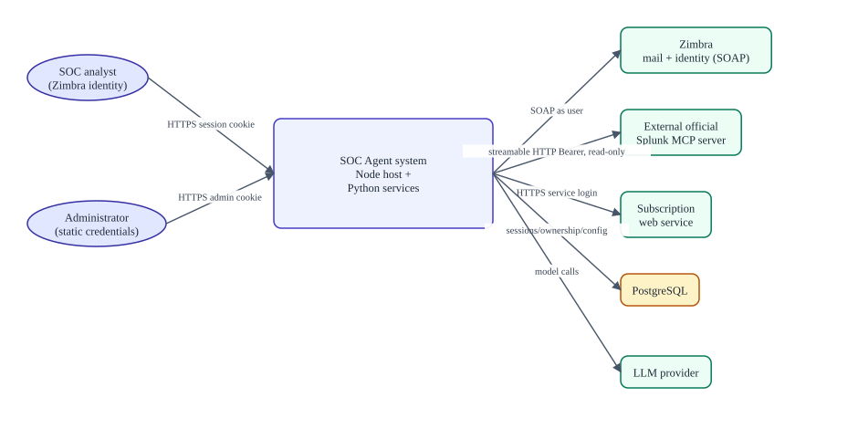

CITIC SOC Agent documentation
Verified against commitb26d55d274cf298a456d84edfbcb42b8dc90134b(branchsplunk-offical-mcp, committed 2026-09-11T15:35:35Z) · documentation verified 2026-09-12.
Presents: README.md + PRODUCT_OVERVIEW.md — the Markdown files are the source of truth.
One-screen system summary
| What is it? | A web-based SOC investigation assistant with tool-using AI, deployed as one Node host process plus Python child processes. |
|---|---|
| Who uses it? | Authenticated SOC staff (analysts) and an administrator (separate static admin login). |
| External systems | Zimbra (mail, identity), an external official Splunk MCP server, a subscription web service, PostgreSQL, an LLM provider. |
| Two MCP servers | soc_agent — local Python stdio server, Zimbra + subscription tools only. splunk_mcp — a client bridge to the external official Splunk MCP endpoint, read-only by allowlist. |
| Safety model | Allowlisted tools only; read-only by default; per-tool ask/auto-run/disabled states; Full access vs SOC mode; email delivery only via an explicit UI Send confirmation; harness shell/filesystem tools disabled. |
| Persistence | PostgreSQL (sessions, ownership, encrypted config), per-user workspaces under .data/soc-workspaces/, optional SQLite evidence store (retained), tracked generated client bundle in lib/. |
The smallest useful architecture diagram

Reader map — four fast paths
| You are… | Read in this order |
|---|---|
| New user | Product overview (below) → Architecture → Flows & UI |
| Developer | Getting started → Development → Tooling → Reference |
| Operator | Getting started → Operations → Troubleshooting |
| Security reviewer | Security & trust → Authentication → Tooling → Traceability matrix |
Product overview in ten minutes
Business problem. SOC analysts pivot between report emails in Zimbra, detection alerts and telemetry in Splunk, and subscription records. This product puts those behind one chat: the analyst signs in as themselves, and the agent investigates with a strictly allowlisted, read-only-by-default tool set.
What the agent can do. Investigate Splunk through 13 read tools; read the analyst's own mailbox (folders, search, messages, headers, attachment text); draft emails; propose mailbox/subscription mutations that require human approval; and follow four skills (splunk-investigation, false-positive-analysis, detection-engineering, spl-writing).
What it deliberately does not do. No autonomous monitoring; no Splunk mutations (no create/update/enable/disable/delete tool exists); no detection deployment (handoff to a human process only); no model-driven email delivery (the tool builds drafts; only the human Send confirmation delivers); no stored mailbox credentials; no shell/filesystem tools for the model.
Page index
| Page | Answers | Presents (Markdown) |
|---|---|---|
| Getting started | Prerequisites, safe setup, first verification | GETTING_STARTED.md |
| Architecture | Context, containers, components, code map, vendor seams | ARCHITECTURE.md |
| Flows & UI | End-to-end runtime flows; UI areas and action modes | RUNTIME_FLOWS.md, USER_INTERFACE_AND_ACTION_MODES.md |
| MCP & tool routing | Names, namespaces, allowlists, naming traps | MCP_AND_TOOL_ROUTING.md |
| Security & authentication | Identity, ownership, trust boundaries, residual risks | AUTHENTICATION_AND_OWNERSHIP.md, SECURITY_AND_TRUST_BOUNDARIES.md |
| Development & testing | Layout, toolchain, change recipes; test layers | DEVELOPMENT.md, TESTING.md |
| Operations, configuration & data | Setup doctor, updates, configuration, data stores | DEPLOYMENT_AND_OPERATIONS.md, CONFIGURATION.md, DATA_AND_PERSISTENCE.md |
| Reference | Catalogs: repository map, tools, interfaces, traceability, glossary | docs/reference/*.md (10 files) |
| Troubleshooting | Symptom → diagnostic → corrective action | TROUBLESHOOTING.md |
| Documentation audit | Verification record, contradictions, unknowns | DOCUMENTATION_AUDIT.md |